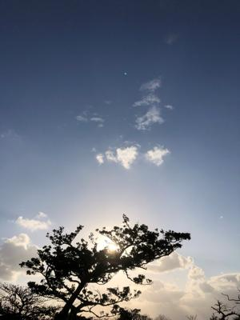
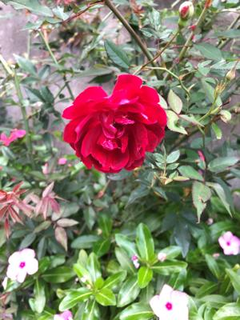

うるがいの話 ある日
最新: 寒い日【うるがいの話 ある日】とは 一日だけのプログです
『うるがいの話』の最新一日だけのプログで、通信料が少なく経済的だ。カニの画像をクリックすると全ての日付が載る『うるがいの話』サイトを表示します
|
|
【うるがいの話】 うるがい(ｳﾙｶﾞｲ urugai)とは、『もずくがに』の名前でとても大きくなります。 |
|---|---|
|
|
【カミマヤーの話】 猫のことを方言でマヤーといいます。カミマヤー（kamimayaa）とは、神の猫のことです。 |
|
【タナガーの話】 たながー（ﾀﾅｶﾞｰtanagaa）とは手長えびのことで、何種類かあり大きいのは車 エビぐらいになります。 |

|
【ぶながぁの話】 ぶながー(bunagaa)とは、赤い髪の毛、赤い身体、そして身長は１ｍ２０ｃｍ ぐらい、川の蟹を食べているの目撃された。場所は沖縄県国頭郡大宜味村のと ある村僕の隣近所に住んでいる爺さんから、聞いた話です。 |
|
|
【ギーマの話】 ギーマ(giima)とは、山原の里山に咲くスズランに似た、 花を付けます。実は食べられます、 気が付くと口の周りが紫になっています。 |
2022年01月12日 (水）寒い日
18:23
 
久々に寒い日だった。夕方のジョギンギで見かけた人たちは、かなりの厚着を
していた。ジョギンギの帰り道、近所のドグさんが、ノハさんに『コロナで運
転手がだれもいなくなって、可哀想なので僕が・・・』と軽自動車を出しなが
ら会話していた。そういえば、友達の職場の店舗と北部の店舗で陽性者がでた
とのこと。コドモが務める店舗の従業員が、濃厚接触者になったので検査をし
たとのこと、陰性だったのでひとまずホッとしていたが、他の店舗では陽性者
がでたらしい。コドモにこの調子だと直ぐに２千名いくだろうと、私が言うと
イヤ、検査しようにもできないので数値は低く抑えられると言っている、オエ
１８時２０分 ビットコインの総資産 ￥１４、３１１